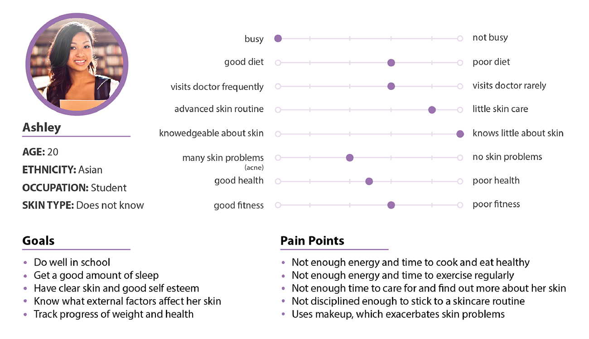
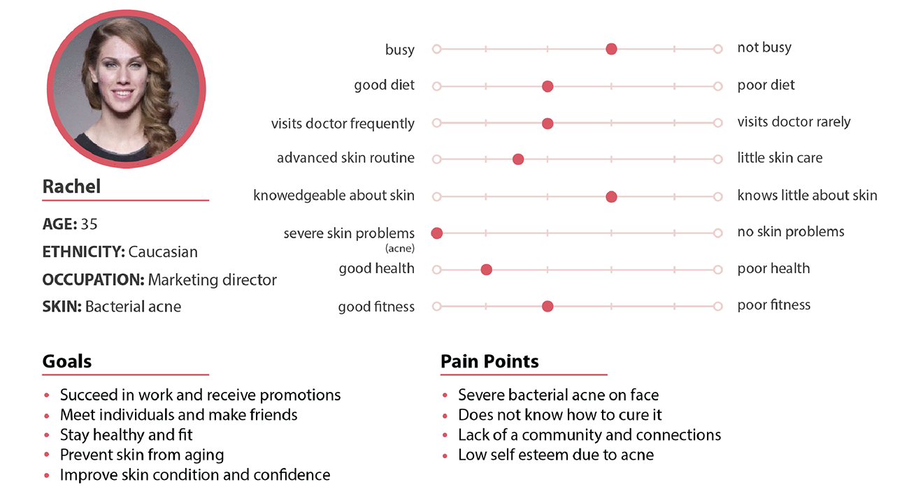

OVERVIEW
During my first semester as a design consultant for Berkeley Innovation, my team partnered with Smart Phage, a health and beauty startup (NLYTN Beauty) that focuses on developing products that eliminate harmful bacterial strains to improve acne and promote skincare. They wanted to create a health application that utilized sensory and metagenomic data to supplement their product. (Scroll all the way down to see an interactive prototype).
THE PROBLEM
Many people wish to know more quantifiable information about their skin, fitness, nutrition, etc., but they want it in an easily digestible way that requires minimal effort on their part.
Therefore, the research question we formulated was:
How might we help busy young adults and working class professionals find out how aspects of their health are related and track their progress in a hands-off way?
Specifically, our client wanted us to focus our research and application toward women, so our target user group consisted mainly of busy young women.
RESEARCH
We interviewed college students and working professionals about their experience with mobile health applications and the information they wanted to know about their health. From the surveys, we gathered our data and findings and found that people are most interested in tracking their progress over time and setting goals, and struggle most with having an established routine. We used these responses to confirm a list of features to be included in the final prototype. For example, we added specific features such as a daily input form and placed the emphasis for data visualizations on changes over time.


PERSONAS
From our research data, we created two personas that could be representative of the potential users of our application, and identified their needs.


OUR SOLUTION
We designed an application to help people who are curious about their health to quantitatively and qualitatively track different aspects of their daily lives in a noninvasive and informational way. Users can choose what aspects of their health they would like to track and integrate other applications they already use to minimize amount of effort required. This application also correlates data from different categories of a user's health and displays graphical results, inferences, and personalized recommendations to convey data in a valuable way. LOW FIDELITY MOCKUPS

RECOMMENDATIONS, DATA, & CORRELATIONS
The most important pages of the application are what the user sees when they click on a category. We came up with this streamlined design to display all the information a person needs to know in an organized and easily-digestible way. While we conducted user interviews, many people voiced concerns that they didn't want to have to spend a lot of time to understand the data, so our design ensures that users can get the most out of the application with minimal effort on their part.
For example, the data tab displays all the graphs pertaining to the current category. Numbers and visuals underneath each graph help interpret the data in a way that is directly relevant to the user-- while they may not care about the graph itself, they can still see their progress towards goals. Similarly, under the correlations tab, users can see how the graphs of two different categories interact with one another. Directly underneath is a short sentence that summarizes any conclusions so that users don't have to spend effort interpreting the visuals themselves.

DESIGN
An important and challenging part of our design decisions was creating a color scheme for the application itself and a color palette for the data visualizations. Color plays an essential role in data visualizations and is required to unbiasedly and appropriately represent whatever data it is displaying. We chose an off-white, light, dark purple, and peach red scheme across the application to set the right tone and reflect a brand image that is clean and fresh.
Similar to the rest of the application, we created a set of minimalistic icons to represent "Home," "Categories," "Correlations," and "Settings" that is consistent with the color scheme and reflects a clean brand image.
#FCFCFD
#D66f72
#9073A9
#2F1C47
#D66f72
#9073A9
#2F1C47
FINAL PRESENTATION

INTERACTIVE PROTOTYPE